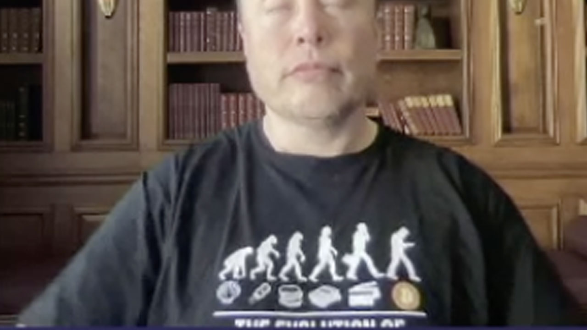

Elon Musk ve Kripto
Elon Musk Dünyada en zengin unvanını almıştı. Ama düşüş yaşayarak 3. Sıralara doğru geriledi. Elon Musk yaptığı açıklamada, Bitcoin kullanımından oluşacak zararları dile getirmesinin ardından Bitcoin üzerinden firmalarına yapılan ödeme seçeneklerini kabul olmayacağını açıkladı. Kripto para Elon Musk arasındaki ilişkiyi şöyle açabiliriz. Elon Musk Dünyanın en zengin insanları listesinde yer alan biri olduğundan, Kripto parada piyasayı yakıp kavurarak para konusunda önemli adımlar atan bir sistemdir. İş böyle olunca Elon Musk’ın yaptığı açıklamaların Kripto para ve Kripto para birimlerini etkilememesi kaçınılmaz durumdadır.
Son aylarda kripto para dünyasında tartışmasız en fazla konuşulan isim olan Elon Musk, attığı Tweetleri ve söyledikleriyle piyasayı olumlu ya da olumsuz yönde etki edebiliyor. Tabii bu etki, kripto para yatırımcılarına büyük kayıplar ya da kazançlar sağlayabiliyor. Bu durumun en canlı örneğini Dogecoin açıklamalarında ve Tesla’nın Bitcoin satın alımını duyurmasıyla Bitcoin’in uçmasında yaşamıştık.
Bugünse Musk, daha önce Twitter CEO’sunun teklifini geri çevirmediği The B Word isimli konferansa katıldı. Konferansta Ark Invest’in kurucusu Cathie Wood ve Twitter CEO’su Jack Dorsey ile konuşan Musk, piyasaları hareketlendirmesi muhtemel bomba açıklamalar yaptı. İşte Elon Musk’ın açıklamaları:
Elon Musk, açıklamasında kişisel olarak Bitcoin’e sahip olduğunu ve Tesla’nın da Bitcoin’i olduğunu söyledi. Yine kişisel olarak Bitcoin dışında Ethereum ve ‘tabii ki (kendi ağzından)’ Dogecoin’e sahip olduğunu söyleyen Musk, bilmediğimiz bir şeyi de paylaştı. Musk, uzay şirketi SpaceX’in de Bitcoin sahibi olduğunu duyurdu.
50 yaşındaki milyarder iş adamı, bu açıklamalarının ardından Bitcoin’in kullanım konusundaki yetersizliğine ve enerji harcamasına yatkın doğasına değindi. Musk, “Bitcoin bazı şeyleri iyi yapıyor ve evrimleşiyor. Sıradan bir insan için kullanışlılığı çok da iyi değil ancak çok potansiyeli var” ifadelerini kullandı. Bununla birlikte Musk’ın ‘Paranın evrimi’ başlıklı bir t-shirt giydiği de dikkat çekti. T-shirt’te paranın evriminin son halkası, Bitcoin olarak gösteriliyor.
